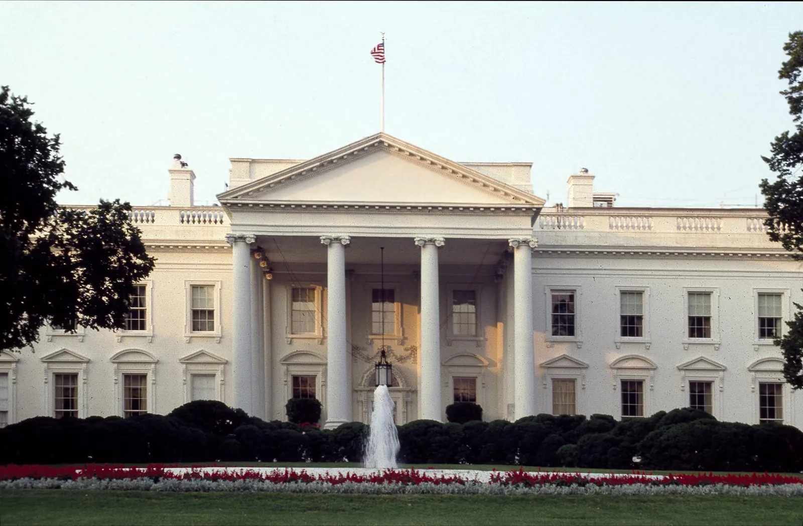
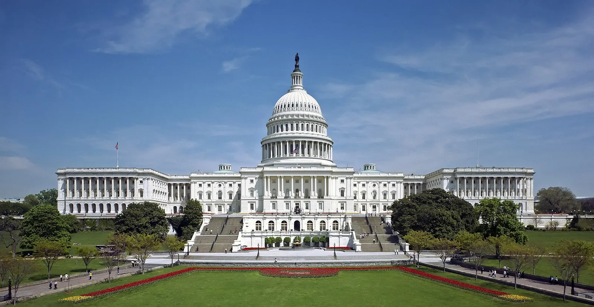

Congress checking how government uses its authority.
Who Has the Power? / Topic 3 / Civics
The Power to Stop a President
Investigate laws, spending, oversight, and confirmations. Explain how Congress checks a president and why disagreement can create both accountability and delay.

Today’s question
When does divided power protect the public, and when does it make governing harder?
Learning targets and success criteria
Learning targets
- I can explain ways Congress checks presidential power.
- I can explain why one election does not settle every governing decision.
- I can explain a benefit and a difficulty of divided government.
Success criteria
- I can accurately explain two congressional checks.
- I can explain why one chamber cannot ordinarily enact a law alone.
- I can support an accountability benefit and a governing difficulty with a specific example.
Follow the investigation
Read down the page. Watch the assigned clip windows, use the evidence cards, and reuse your notes in the final explanation.
55 minutes before lunch. After lunch: 20–25 minutes of CNN10 and daily news.
Today you will submit
- Five practice choices, corrected after feedback.
- A short source note: one factual bullet and its source.
- An application note: two short bullets.
- One final explanation: two or three clear sentences.
Background readings and Push further are optional. Use the sentence frames, read-aloud support, or voice typing as needed. Follow your teacher’s paper accommodations. Drafts save only in this browser; submit in Canvas before lunch.
01Predict
Start with a disagreement
You know how elections can change congressional control. Now ask what that control can do when Congress and the president disagree.
Read the Background: Why can a president face resistance from Congress?
An election does not give one person every governing power. The president leads the executive branch, while Congress has legislative responsibilities. The two may agree on a goal and disagree on the details—or disagree about the goal itself.
If different parties control the presidency and at least one chamber, we call that divided government. It can also be difficult to reach agreement within a single party. To understand a disagreement, first ask which institution has the authority to take the proposed action.
A president wants a new law. The House says no. What happens next?
Make a private prediction. It is okay not to know yet.
Follow one nearby race: Indiana’s Fourth District
United States Representative, Fourth District · November 3, 2026 general election
The winner fills one House seat. House members vote on federal laws and spending, serve on committees, and provide oversight. One winner does not alone determine chamber control or enact a promised policy.
Today’s connection: How could the winner influence spending or oversight, and what could the winner not do alone?
Race details and the starting point
Candidate list checked October 19, 2026. These are candidates, not declared November winners.
- Drew Cox — Democratic
- Jim Baird — Republican
- David E. Bokash — Write-In (Independent)
This is a shared nearby example. It may not be every student’s home district. No home address or family voting choice is needed.
Use federal spending as the recurring issue: how could a House member influence funding decisions affecting communities, and what agreement would still be needed? This is an institutional question, not a claim that the candidates hold identical positions.
Indiana Election Division: official general-election candidate list ↗ · 2026-09-22
Official file linked from the state’s Candidate Information page; read the United States Representative, Fourth District rows. The date identifies the file version.
Indiana Election Division: candidate information ↗ · 2026-10-19
Open the 2026 General Election Candidate List if the direct file is replaced. Recheck names before teaching.
Before the election: the dated starting point
As of 2026-10-19: Republicans organize the House majority. Republicans organize the Senate majority.
This records current chamber organization, not a 2026 prediction. Recheck before teaching; compare the same starting point with post-election evidence. No live seat totals are inferred here.
U.S. House: current leadership ↗ · 2026-10-19
The Republican leadership includes the House majority leader. Date is the check date.
U.S. Senate: current leadership and officers ↗ · 2026-10-19
The Republican leadership includes the Senate majority leader. Date is the check date.
02Learn
Find the checks on power
The disagreement is only the beginning. To explain what happens next, identify the powers held by each institution. Watch for concrete actions rather than party labels.
Before the clip: the essential language
The president’s rejection of a bill.
Different parties control the presidency and at least one chamber.
House agreement → Senate agreement on the same text → presidential action. A veto override requires two-thirds in each chamber.
Both chambers conduct oversight. The Senate alone confirms many presidential nominees.
Watch together · Assigned 0:00–4:00
Checks and Balances: Crash Course Government #3 ↗
Crash Course / PBS Digital Studios · Published 2015-02-06 · Full runtime 8:30
Watch for: How can Congress check the president?
Evergreen explanation. Names, amounts, and earlier election examples in this clip are dated examples, not 2026 results.
Stop at the assigned endpoint. Caption options vary by player; use the reading route if captions or playback are unavailable.
Reading route / core takeaways
- Congress and the president have separate powers. Congress can examine government actions and make spending laws.
- The Senate confirms many presidential nominations. Oversight is a way to gather evidence, not proof of wrongdoing.
Pause and check
Stop at the assigned endpoint. Ask: How can Congress check the president? Use the core takeaways to check the answer before continuing.
Read the Background: The essentials
Congress considers legislation and decides federal spending through laws. It also conducts oversight: checking government actions through hearings and investigations, among other tools. The Senate confirms many presidential appointments. Those powers matter whether leaders share a party or disagree.
Read the Background: What do oversight, spending, and confirmations involve?
Oversight means Congress examining how government uses its authority. Hearings and investigations can ask officials to explain decisions and provide information. Asking questions can help establish facts; it does not itself prove wrongdoing.
Congress also makes spending decisions through legislation. Many presidential nominations require Senate confirmation. These powers give Congress ways to influence the executive branch. They are distinct actions, with different rules, so an explanation should name the particular check being used.
Who has this power?
Identify the institution or institutions involved.
Practice, feedback, then correct your choices. First-try errors are not graded.
03Evidence
Follow a bill through government
Follow the school-lunch proposal through the House, Senate, and president. The video window and written route show why agreement is needed at more than one point.

Follow the bill
Trace a proposal through both chambers and presidential action. Check the video’s simplified explanation against the official reference.
Watch together · Assigned 0:00–4:00
How a Bill Becomes a Law: Crash Course Government #9 ↗
Crash Course / PBS Digital Studios · Published 2015-02-20 · Full runtime 6:56
Watch for: Why does winning one chamber not guarantee a new law?
Evergreen explanation. Names, amounts, and earlier election examples in this clip are dated examples, not 2026 results.
Stop at the assigned endpoint. Caption options vary by player; use the reading route if captions or playback are unavailable.
Reading route / core takeaways
- Ordinarily, the House and Senate must approve the same bill before presidential action.
- A veto can be overridden with two-thirds support in each chamber. One chamber cannot ordinarily enact a law alone.
Pause and check
Stop at the assigned endpoint. Ask: Why does winning one chamber not guarantee a new law? Use the core takeaways to check the answer before continuing.
Read the Background: Why do both chambers have to agree?
Ordinarily, the House and Senate must approve the same bill before it goes to the president. If the chambers approve different versions, those differences must be resolved. A proposal can therefore change as institutions negotiate.
The president can sign the bill or use a veto, among the actions the Constitution permits. Overriding a veto requires two-thirds support in each chamber. The practical lesson is that an election victory in one chamber rarely settles the entire lawmaking process.
Follow the same proposal through the institutions
The school-lunch proposal is a constructed example. Ordinarily, both chambers must approve the same bill before it goes to the president. A House committee hearing is neither Senate approval nor a new law. Use this route when judging scrutiny and delay.
U.S. House: the legislative process ↗ · 2026-10-19
Official explanation of bills, committees, and presidential action.
Classroom paraphrase of the linked official explanation; use the source to check the rule.
One factual bullet and a source name are enough.
Check your response:
- Name the source.
- State the specific fact it establishes.
Start here
Congress can ____ and ____. My source establishes ____.
Push further / optional
Distinguish a power of both chambers from a Senate-only power.
More sources and optional clips
National Archives: Constitution ↗
Articles I and II establish legislative and executive powers. Follow the amendments for later changes.
U.S. House: the legislative process ↗
Official explanation of bills, committees, and presidential action.
04Apply
Weigh scrutiny and delay
Rules have consequences for people. The same check that exposes a problem can also slow a decision. Consider the strongest reason someone might welcome scrutiny and the strongest concern about delay.
Practice scenario (made up for class, not a real 2026 bill): The president proposes more school-lunch funding. The House committee questions its cost. Some families want careful scrutiny; others need the service quickly. The Senate has not agreed to the proposal.
Read the Background: How can a check be useful and frustrating?
Suppose a committee questions a spending proposal. Someone concerned about waste might welcome the hearing because it could uncover problems. Someone waiting for the funded service might worry that delay will create costs or harm.
Both arguments can be reasonable without being equally supported in every case. Ask what the hearing reveals, how long the delay lasts, and who is affected. Evaluate evidence about those consequences instead of assuming a party label tells you the answer.
Two short bullets are enough.
Check your response:
- Trace House and Senate agreement, then presidential action.
- Explain a benefit of scrutiny and a cost of delay.
Start here
The same bill also needs ____. Scrutiny could ____. Delay could ____.
Push further / optional
What evidence would help judge which concern matters more here?
05File
Make a supported judgment
Return to the opening disagreement. You can now explain a mechanism, weigh two consequences, and state what your conclusion depends on.
Read the Background: How to make a judgment without oversimplifying
Name the check, explain what it can accomplish, and recognize its cost or limit. “Congress can investigate” becomes a stronger explanation when you connect the investigation to information, accountability, or a delayed decision.
You can conclude that divided government helps, hurts, or does both in a situation. Support the conclusion with an institutional example and explain fairly why someone could reach another judgment.
How this investigation is assessed / 20 points
Political preferences are not scored. Short writing, dictated text, and agreed paper responses can demonstrate the same learning.
- Checks and institutions · 6 points. Accurately explain two congressional checks and distinguish a Senate-only confirmation power from powers both chambers exercise.
- Relevant evidence · 4 points. Name a relevant clip or official source and accurately use an institutional fact from it.
- Accountability and governing · 8 points. Use the scenario to explain both an accountability benefit and a governing difficulty, with a concrete mechanism and a limit.
- Explain your thinking · 2 points. Make the reasoning understandable without requiring a long response, public speech, or agreement with a political position.
Two or three clear sentences are enough.
Check your response:
- accurately explain two congressional checks.
- explain why one chamber cannot ordinarily enact a law alone.
- support an accountability benefit and a governing difficulty with a specific example.
Start here
It can do both because ____. For example, ____.
Push further / optional
Identify a circumstance in which your conclusion could change.
File your investigation
- Review your practice and source note, application note, and final explanation.
- Choose Gather All My Work. After any revision, gather again.
- Paste into the assigned Canvas Text Entry and submit. Check the submission confirmation.
Drafts save only on this browser. Nothing reaches your teacher until you submit in Canvas. Manual copy always selects the latest work.
Source standards and video dates
Government references establish institutional facts. PBS, WFYI, and Crash Course provide educational explanations. Campaign messages are evidence of a message, not independent proof of its claim. Results need a source, check date, and reporting stage.
The specified play windows limit viewing time; the written takeaways supply the lesson’s core facts. Earlier names and examples in videos are historical examples. Check the player’s caption options. Use the visible takeaways and background reading if playback or captions are unavailable.
National Archives: Constitution ↗
Articles I and II establish legislative and executive powers. Follow the amendments for later changes.
U.S. House: the legislative process ↗
Official explanation of bills, committees, and presidential action.
Materials checked 2026-10-19. Recheck current race and source details before class.
Next: The Fight for Your Vote →
Open printable activity and evidence packet · After lunch: The Desk